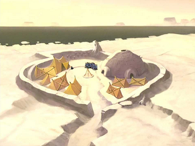
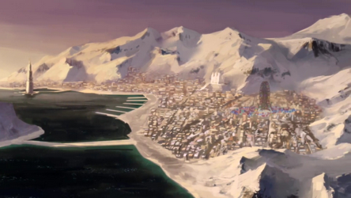
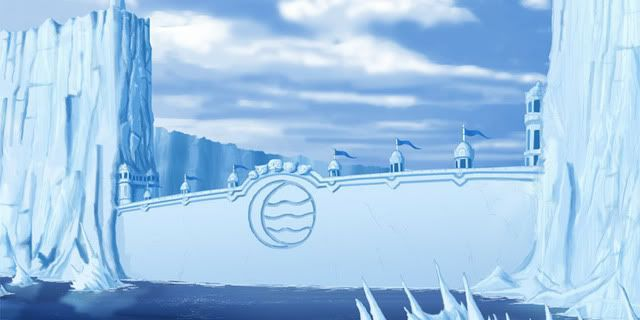
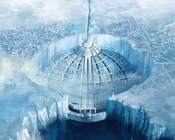

TRIBO DA ÁGUA DO SUL

Tribo da água do sul em "Avatar A lenda de Aang"

Tribo da água do sul em "Avatar A lenda de Korra"
A Tribo da Água do Sul é um estado independente no Polo Sul e na divisão do sul das tribos da água. É
composta
por
uma federação de várias tribos menores,o Sul é governado por um Conselho de Anciãos, que também elege o
chefe
da tribo. A Tribo da Água do Sul alcançou sua independência somente após a Guerra Civil das Tribos da
Água.
Antes, a tribo tinha sido uma confederação tribal autônoma sob a jurisdição da Tribo da Água do Norte. O
sul
possui uma economia poderosa, com seu povo que vive na maior parte em sua capital litoral e em diversas
vilas
próximas. Os povos da Tribo da Água do Sul são modernos, progressistas, e focalizados no comércio, mas lhe
faltam
espiritualidade.
A Tribo da Água do Sul teve uma história agitada e viu tempos de prosperidade e liberdade, bem como
declínio e
genocídio. Antes da Guerra dos Cem Anos, o Sul estava prosperando e tinha uma cultura única e estilo de
dobra de
água próprio. Depois de uma série de incursões brutais da Nação do Fogo, entretanto, o Polo Sul foi deixado
devastado e quase sem nenhum dobrador de água. Em 99 DG, a Tribo da Água do Sul estava à beira da extinção,
com
sua cultura destruída e sua principal cidade praticamente abandonada, e seu estilo de Dobra de Água original
praticamente perdido.Isso mudou quando Katara e Sokka encontraram Avatar Aang e começaram a viajar com ele,
a fim de terminar a guerra e salvar o mundo.
TRIBO DA ÁGUA DO NORTE

Tribo da água do norte em "Avatar A lenda de Aang"

Tribo da água do norte em "Avatar A lenda de Korra"
A Tribo da Água do Norte é um estado independente localizado no Polo Norte, governado por uma chefia
monárquica hereditária. Como a divisão mais antiga das duas Tribos da Água, a Tribo da Água do Norte
dominou tanto o Polo Norte quanto o Polo Sul durante séculos. Sua cidade capital, notável por ser feita
quase inteiramente de gelo, é referida pelo mesmo nome.
Embora grande parte do seu território englobe o
terreno da tundra em grande parte inóspito, a Tribo da Água do Norte sempre prosperou em seu isolamento e
tornou-se um grande poder político e econômico após a Guerra dos Cem Anos. Ao contrário de sua contraparte
no Sul, o Norte nunca sucumbiu a ataques estrangeiras como o enorme Cerco do Norte pela Nação do Fogo.
O povo da Tribo da Água do Norte é tradicionalmente conservador e muito espiritual, mas ainda está aberto a
mudanças e reformas. O estilo de Dobra de Água do norte é a forma mais difundida, praticada pelos
dominadores de água em ambos os Polos e na República Unida das Nações, pois os ataques à Tribo da Água do
Sul levaram o estilo do sul a se tornar quase extinto durante a Guerra dos Cem Anos..
Muito antes da Guerra dos Cem Anos, os predecessores da Tribo da Água se mudaram para o Pólo Norte a partir
das regiões tropicais que habitavam originalmente. Lá, eles formaram várias tribos independentes.
Eventualmente, um grupo de dobradores de água se uniu para construir a capital da Tribo da Água do Norte,
numa tentativa de reunir todas as tribos do Pólo Norte. Os dobradores de água usaram seu ambiente gelado
para criar os vários templos, aldeias e canais que compõem a cidade. Depois de um período de agitação
civil, essa nova unidade declinou e um grupo de separatistas viajou para o Pólo Sul para gerar uma nova
tribo. Apesar dessas dificuldades iniciais, as relações entre a Tribo da Água do Norte e a secessionista
Tribo da Água do Sul melhoraram com o tempo.
O Sul reafirmava a autoridade dos chefes do norte, desde que
lhe fosse concedida autonomia e um Conselho de Anciãos para governar a si mesmo. Para fortalecer os laços
tribais e a harmonia política, a família dominante do Norte começou a tomar os sulistas como seus cônjuges.
Além disso, a Celebração da Lua Nova foi estabelecida para reunir as duas Tribos da Água. Esta
situação foi mantida até a eclosão da Guerra dos Cem Anos séculos depois.